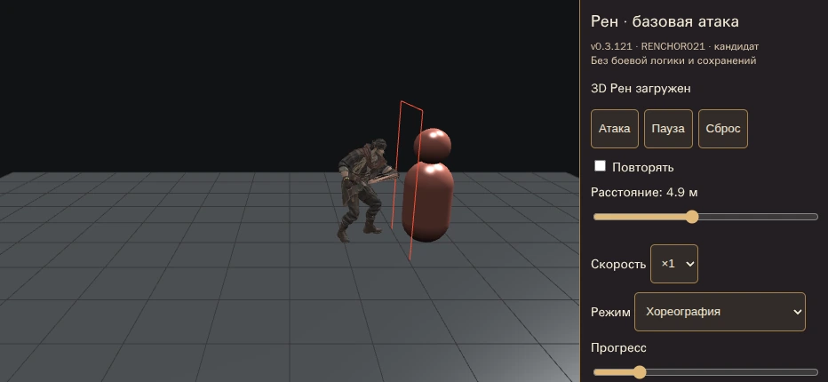
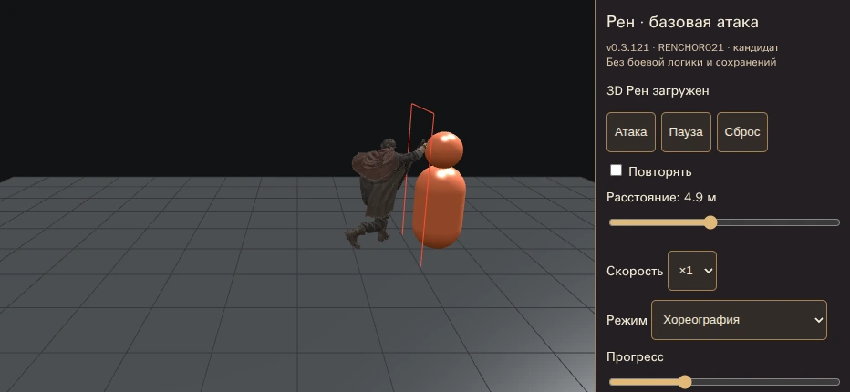
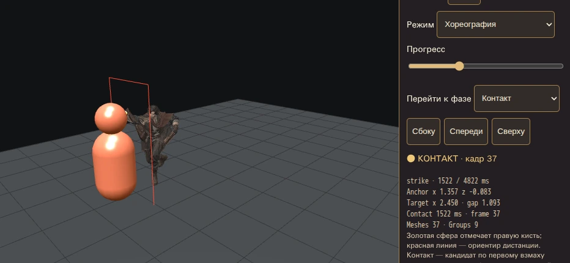
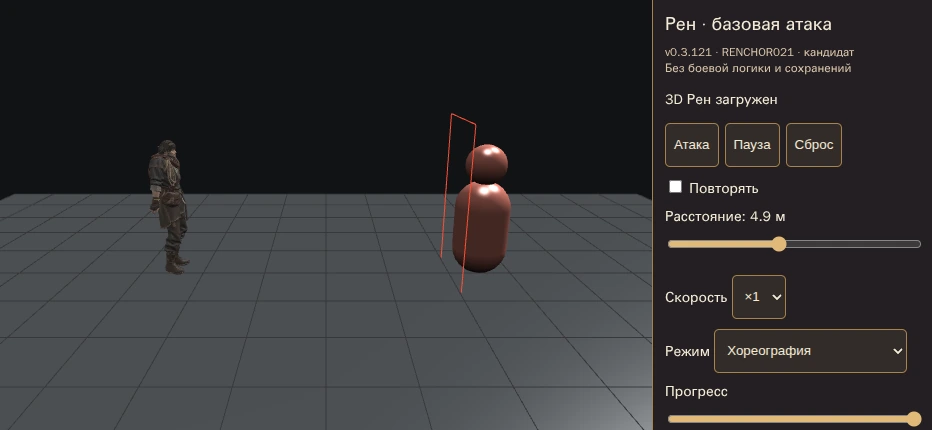
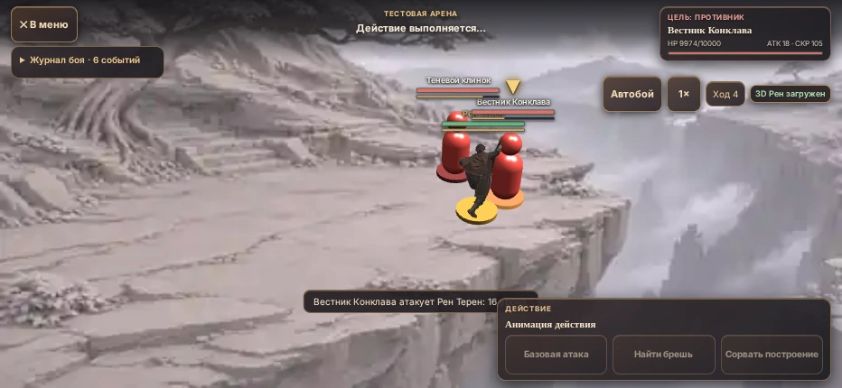

Базовая атака Рена
Запись настоящего GLB в Babylon.js / Chromium WebGL. Здесь можно оценить подход, первый удар, восстановление и отход без поддержки WebGL в вашем браузере. Это запись кандидата, не опубликованная версия игры и не подтверждение приёмки на iPhone.
Открыть интерактивный стенд Обсуждение PR #262
Сначала показаны контрольные кадры и ракурсы; затем полные повторы ×1, ×2 и ×4. Видео записано автоматически в CI; сценарии с увеличенными тестовыми HP отдельно проверяют обычную кнопку атаки и завершение боя.
| Проверка | Что подтверждает |
|---|---|
| 2,5 / 4,9 / 8 м · ×1 / ×2 / ×4 | Контакт кисти с капсулой цели, возврат домой и непрерывная траектория |
| Ключи GLB и повтор | Исходные анимации сохранены; ресурсы не накапливаются |
| Обычный бой | Кнопка basic, блокировка второго действия, смерть, победа, повтор и выход |





Остаётся оценить художественно: переходы ног, обратную ходьбу, читаемость удара и темп. Отдельного backward-клипа у модели нет; отход использует исходный Walking в обратном времени. Автоматические проверки не доказывают художественное качество или производительность iPhone Safari.
Измерения стенда · Проверки обычного боя · Диагностика и ограничения